Hands-on enterprise IT Support / Service Desk portfolio combining a traditional
Windows Server and Active Directory environment with Microsoft 365, Microsoft Entra ID,
Microsoft Intune, Exchange Online, PowerShell and endpoint-security administration.
Windows Server 2022Active DirectoryMicrosoft 365Microsoft Entra IDMicrosoft IntuneExchange OnlinePowerShellConditional Access
Password reset, sign-in logs and session revocation
Exchange Online mail-flow validation
Windows 11 Entra Join and Intune enrollment
Company Portal deployment
Compliance and endpoint-security policies
Conditional Access validation in Report-only mode
Microsoft 365 / Entra ID / Intune
The cloud extension adds modern workplace administration and Service Desk scenarios to the
on-premises Windows lab. Full configuration steps and all supporting screenshots are stored in
the dedicated cloud runbook.
Windows Server & Active Directory — Detailed Runbook
The sections below preserve the original step-by-step build, troubleshooting notes,
commands used and screenshot evidence from the Windows / Active Directory lab.
Enterprise Windows IT Support & Active Directory Home Lab
This archive reconstructs the lab from initial virtual-machine setup through final validation. It is written as a repeatable runbook: each section records the action, commands used where command-line work was actually performed, the observed result, and the associated screenshot evidence.
Fidelity note
GUI actions are documented as GUI steps; commands are **not invented** for steps that were completed through the interface.
Where the lab clearly used a command, that command is included.
A few optional PowerShell equivalents are labelled **Optional equivalent** and are not presented as commands that were necessarily used during the original run.
The lab evidence comes from the screenshots preserved during the project.
Lab identity
| Item | Value |
|---|---|
| Hypervisor | Oracle VirtualBox |
| Domain controller | DC01 — Windows Server 2022 Standard Evaluation (Desktop Experience) |
| Client | CLIENT01 — Windows 11 Pro |
| Domain | adlab.local |
| NetBIOS domain | ADLAB |
| Internal network | 192.168.10.0/24 |
| DC / DNS / DHCP | 192.168.10.10 |
| CLIENT01 lease | 192.168.10.100 |
| DC NAT address observed | 10.0.2.15 |
Main AD objects
User OUs: `ADLAB-Users\IT`, `ADLAB-Users\HR`, `ADLAB-Users\Sales`
Observed result: Prerequisite checks passed, the server rebooted, and DC01 became a writable domain controller for adlab.local.
Evidence — New forest configured as adlab.local
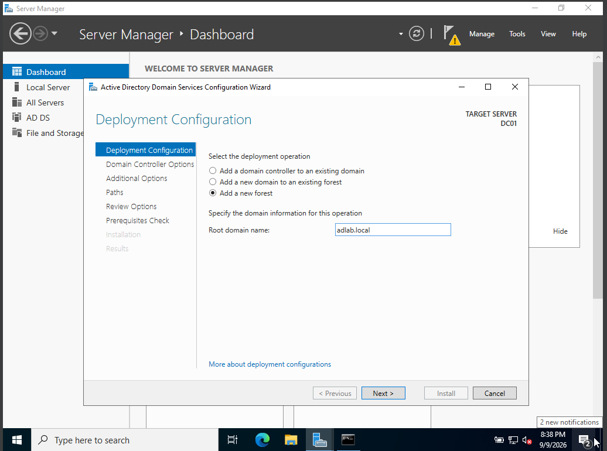
New forest configured as adlab.local
Evidence — AD DS prerequisite check passed
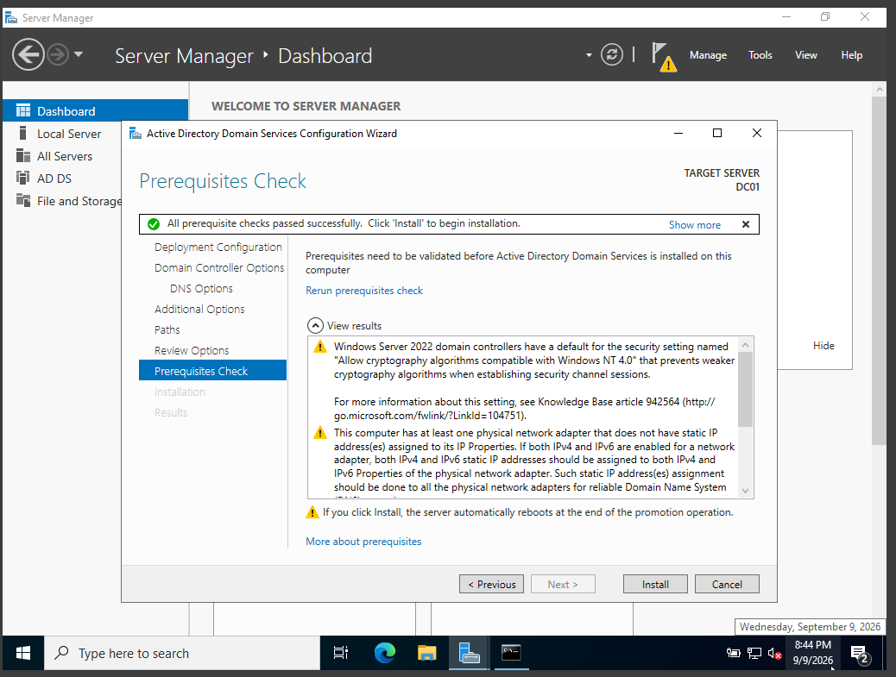
AD DS prerequisite check passed
Step 2.3 — Prepare CLIENT01 for the domain
Before joining the domain, the client needed to resolve the domain controller through AD DNS.
Validation commands used during the lab:
ping dc01.adlab.local
nslookup dc01.adlab.local
Observed result: CLIENT01 could reach the DC and resolve the server name through the ADLAB network.
Evidence — CLIENT01 reaching DC01 during DNS troubleshooting
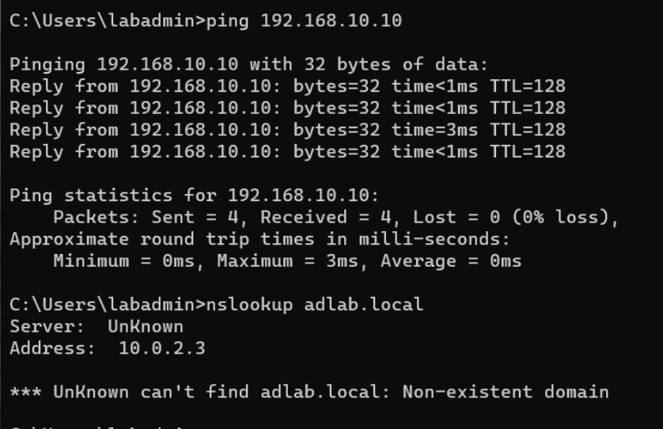
CLIENT01 reaching DC01 during DNS troubleshooting
Evidence — CLIENT01 resolving DC01 through DNS
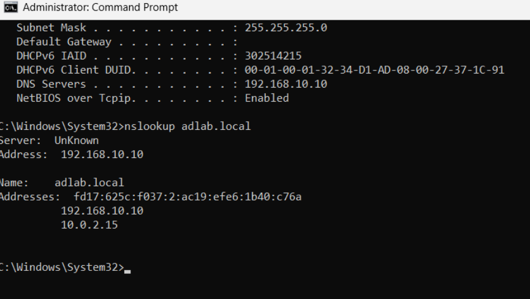
CLIENT01 resolving DC01 through DNS
Step 2.4 — Join CLIENT01 to adlab.local
On CLIENT01 open system/domain settings.
Change membership from workgroup to **Domain**.
Enter: `adlab.local`.
Provide domain administrator credentials.
Accept the welcome message and restart.
Observed result: CLIENT01 became a member computer of adlab.local and could authenticate domain users.
Evidence — CLIENT01 domain join success
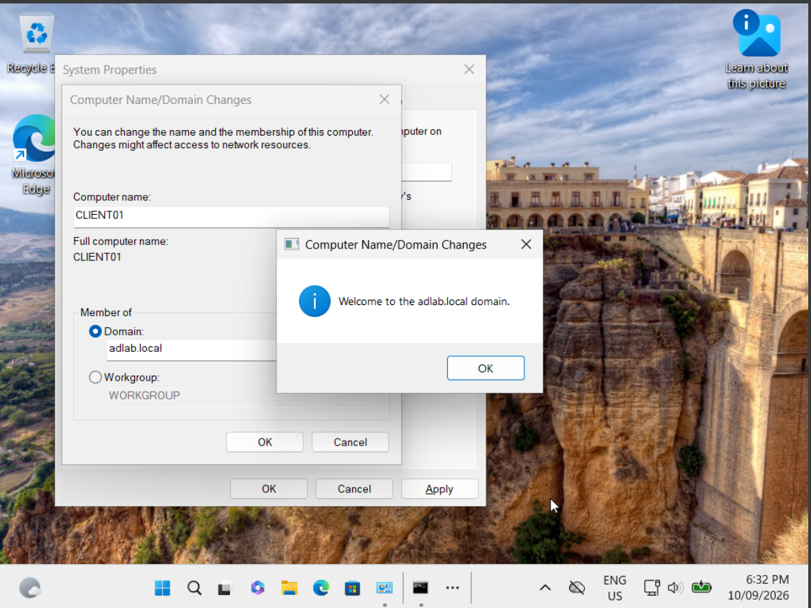
CLIENT01 domain join success
3. Active Directory Organisational Structure, Users and Groups
Step 3.1 — Create the OU structure
Using Active Directory Users and Computers (ADUC), create:
ADLAB-Users
├── IT
├── HR
└── Sales
ADLAB-Computers
ADLAB-Groups
Move CLIENT01 into ADLAB-Computers so computer-targeted GPOs can be linked cleanly.
Observed result: Users, computers and security groups were separated into predictable administrative containers.
Evidence — Active Directory OU structure
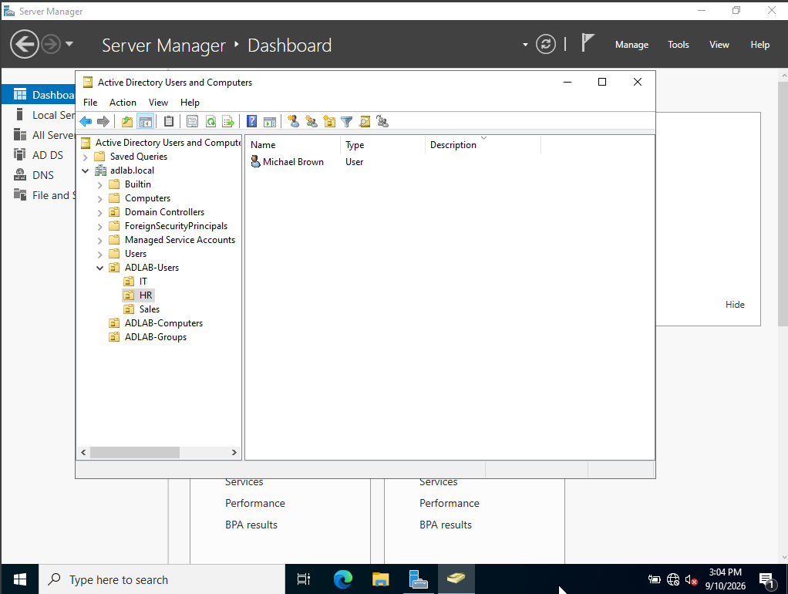
Active Directory OU structure
Step 3.2 — Create department users
Create these lab accounts:
| Display name | Username | Department |
|---|---|---|
| Md Mahadi Hasan | mdmhasan | IT |
| Sarah Ahmed | sahmed | Sales |
| Michael Brown | mbrown | HR |
Each account was placed in the appropriate departmental OU.
Step 3.3 — Create security groups
In ADLAB-Groups, create Global Security groups:
`GG_IT_Users`
`GG_HR_Users`
`GG_Sales_Users`
Add department users to the matching group.
Evidence — AD users and groups
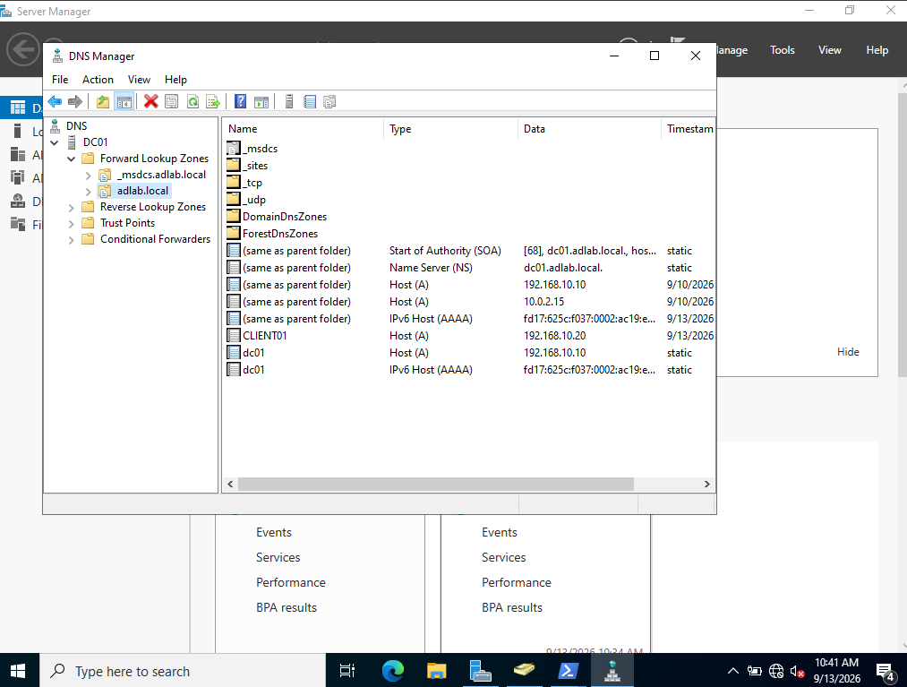
AD users and groups
Step 3.4 — Validate group membership
PowerShell/AD validation was used to confirm membership. A typical command used later in the lab was:
Get-ADPrincipalGroupMembership -Identity mdmhasan | Select-Object Name
For a group-centric check:
Get-ADGroupMember -Identity GG_Sales_Users
Observed result: Users belonged to their department group plus normal domain membership such as Domain Users.
Evidence — Department security-group membership validation
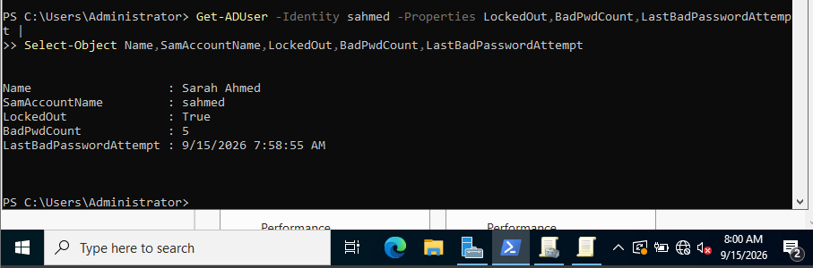
Department security-group membership validation
4. DNS, DHCP and Domain Networking
Step 4.1 — Install and authorise DHCP
On DC01, install the DHCP Server role and complete post-install configuration so the server is authorised in Active Directory.
Create a scope for the ADLAB subnet:
Network: `192.168.10.0/24`
Lease range: `192.168.10.100` – `192.168.10.200`
DNS server option: `192.168.10.10`
Domain DNS suffix: `adlab.local`
Observed result: CLIENT01 received 192.168.10.100, used DHCP server 192.168.10.10, and used DNS server 192.168.10.10.
Evidence — DHCP server and scope configuration
DHCP server and scope configuration
Evidence — CLIENT01 DHCP, DNS and domain network state
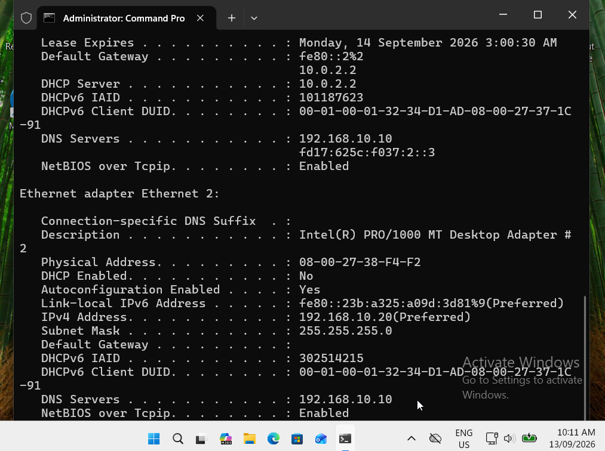
CLIENT01 DHCP, DNS and domain network state
Step 4.2 — Validate DNS records
DNS Manager was used to inspect the adlab.local forward lookup zone and the dc01 record.
Evidence — DC01 DNS record configuration
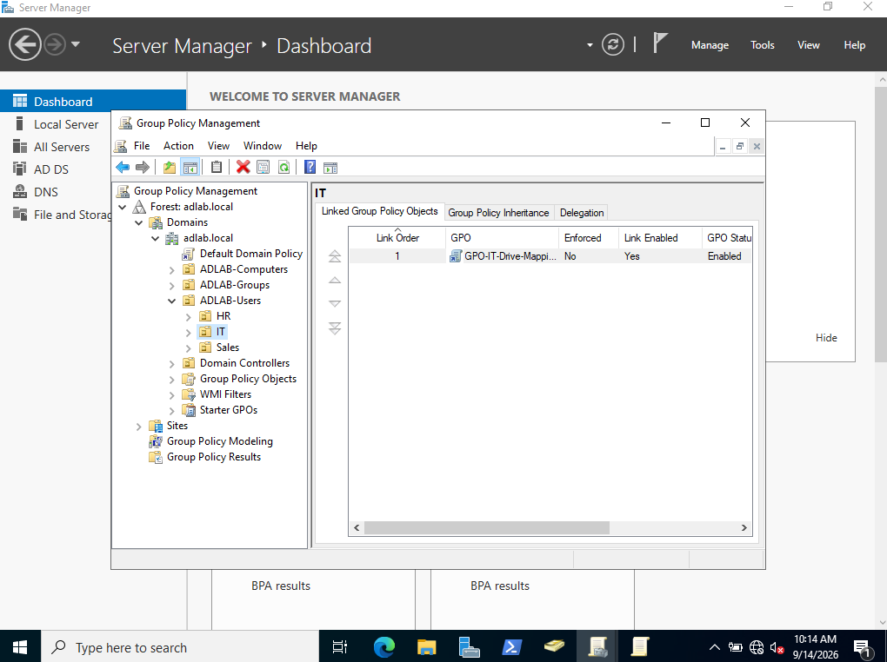
DC01 DNS record configuration
Step 4.3 — Discover the domain controller
Command used on CLIENT01:
nltest /dsgetdc:adlab.local
Observed result: The command found \DC01.adlab.local at 192.168.10.10 and returned AD service flags such as PDC, GC, LDAP, KDC, TIMESERV, WRITABLE and DNS.
Evidence — Successful DC discovery with NLTEST
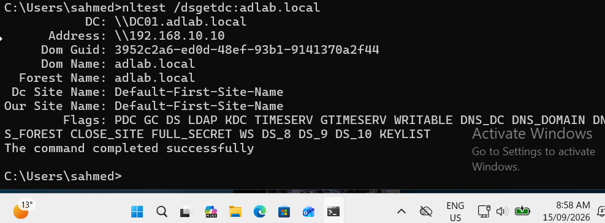
Successful DC discovery with NLTEST
Step 4.4 — Troubleshoot the stale NAT DNS record
Problem observed
dc01.adlab.local could register the NAT-facing address 10.0.2.15 in addition to the intended internal address 192.168.10.10. That is undesirable for domain clients.
Interface registration check
PowerShell was used to inspect DNS client registration settings:
The stale dc01 A record for 10.0.2.15 was removed from the adlab.local DNS zone. The lab used PowerShell for DNS resource-record cleanup; the equivalent targeted command is:
Remove-DnsServerResourceRecord -ZoneName "adlab.local" -RRType "A" -Name "dc01" -RecordData "10.0.2.15" -Force
Observed result: DNS returned the intended internal address 192.168.10.10 (plus IPv6 where applicable), no longer the stale NAT IPv4 address. Ping resolved to 192.168.10.10 and succeeded 4/4.
Evidence — PowerShell DNS cleanup evidence
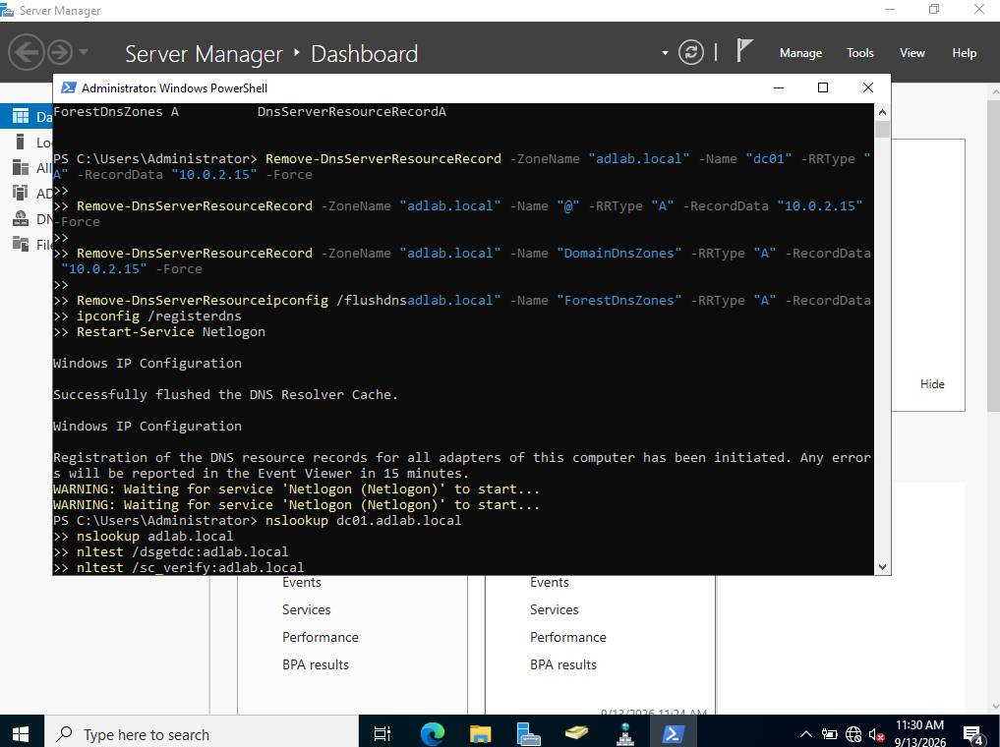
PowerShell DNS cleanup evidence
Evidence — Final clean DC01 DNS validation
Final clean DC01 DNS validation
Note: nslookup displayed DNS server name as UnKnown because a reverse PTR record was not configured. Forward DNS and domain operations were still working correctly.
5. Group Policy and Endpoint Security
Step 5.1 — Configure the domain account lockout policy
Evidence — Defender antivirus and real-time protection verified
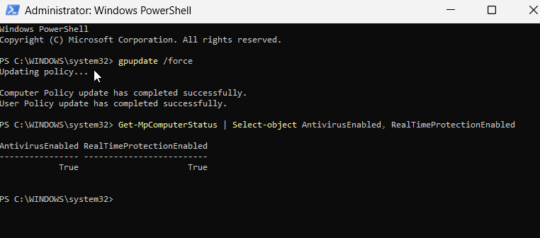
Defender antivirus and real-time protection verified
Step 5.5 — Verify applied computer policy
On CLIENT01:
gpupdate /force
gpresult /scope computer /r
Observed result:GPO-Workstation-Security-Baseline and Default Domain Policy were listed as applied. The computer DN showed CLIENT01 in OU=ADLAB-Computers.
Evidence — Final Group Policy validation on CLIENT01
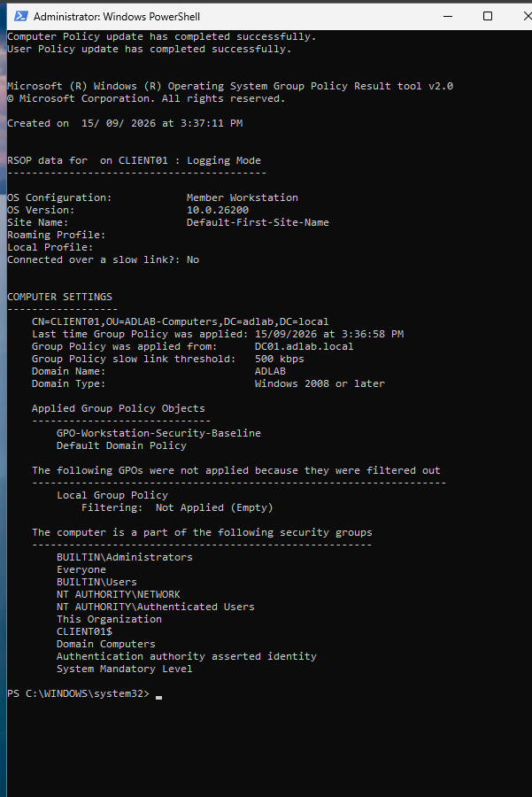
Final Group Policy validation on CLIENT01
6. Department File Shares and Role-Based Access Control (RBAC)
Observed result:dc01.adlab.local resolved to 192.168.10.10, and ping completed successfully.
Evidence — Final DNS and connectivity validation
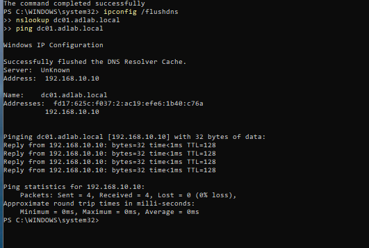
Final DNS and connectivity validation
Step 10.2 — Validate domain-controller discovery
nltest /dsgetdc:adlab.local
Expected/observed target: \DC01.adlab.local on 192.168.10.10 with the appropriate AD service flags.
Step 10.3 — Validate the secure channel
Run from an elevated command prompt:
nltest /sc_verify:adlab.local
Observed result: The secure-channel verification returned NERR_Success.
Evidence — Domain secure-channel verification
Domain secure-channel verification
Evidence — Final secure-channel proof
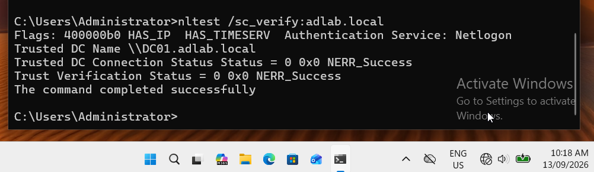
Final secure-channel proof
Step 10.4 — Validate applied Group Policy
gpupdate /force
gpresult /scope computer /r
Observed result:
`GPO-Workstation-Security-Baseline` applied.
`Default Domain Policy` applied.
Policy source was `DC01.adlab.local`.
CLIENT01 appeared under the `ADLAB-Computers` OU.
Evidence — Final GPO validation
Final GPO validation
Step 10.5 — Final project acceptance criteria
The lab was considered complete after confirming all of the following:
CLIENT01 had a valid DHCP lease on the ADLAB network.
AD DNS resolved DC01 correctly without the stale NAT IPv4 record.
The domain controller could be discovered.
The domain secure channel was healthy.
Required computer GPOs applied.
Sales drive mapping worked for the Sales user.
Sales user access to HR and IT was denied.
Defender antivirus and real-time protection were enabled.
Logon auditing was active and Event ID 4625 could be investigated.
The PowerShell helpdesk toolkit executed successfully against Active Directory.
Troubleshooting Log — Problems Encountered and Resolutions
1. Stale DC01 NAT IP in DNS
Symptom:dc01.adlab.local could resolve to the VirtualBox NAT IP 10.0.2.15 instead of the intended ADLAB address.
Cause: DNS registration on the wrong network interface.
Resolution: Keep NAT-interface DNS registration disabled, enable registration on the ADLAB interface, remove the stale A record, flush the client DNS cache and verify 192.168.10.10 resolution.
2. Sales account lockout
Symptom:sahmed could not sign in after repeated bad passwords.
Diagnosis:LockedOut=True, BadPwdCount=5.
Resolution:Unlock-ADAccount -Identity sahmed, then confirm LockedOut=False and successful login.
3. Department access denied
Symptom: Sales user received access denied for HR/IT paths.
Interpretation: This was the *expected* RBAC outcome, not a fault, because Sales should only access the Sales share.
Validation:S: and \\DC01\Sales worked; \\DC01\HR and \\DC01\IT returned Access is denied.
4. Security log access denied as a standard user
Symptom: Sarah's standard user account could not read the Security log.
Resolution: Open Event Viewer with administrative privileges and investigate Event ID 4625 there.
5. Copy/paste problems between host and CLIENT01
Symptom: Clipboard sharing in VirtualBox did not work reliably.
Resolution: Confirm Shared Clipboard = Bidirectional, insert the Guest Additions CD image and install Oracle VirtualBox Guest Additions 7.1.8 on CLIENT01.
6. `nslookup` showed Server: UnKnown
Symptom: Forward lookup worked, but nslookup displayed the DNS server name as UnKnown.
Cause: No reverse PTR record for the DNS server.
Decision: Not a blocker for this lab; forward DNS, domain discovery and secure-channel checks were healthy.
Portfolio project by Md Mahadi Hasan · Target roles: IT Support · Service Desk · Desktop Support · Junior Systems Administration · Junior Modern Workplace Support